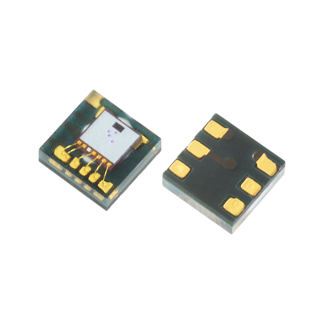
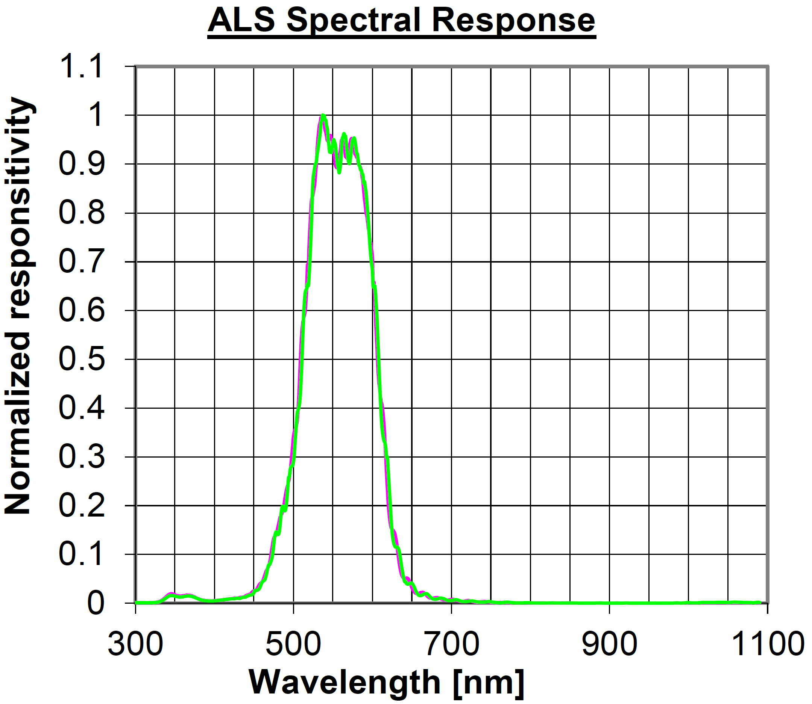
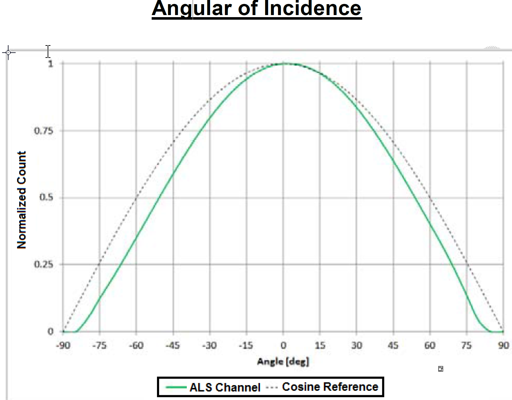
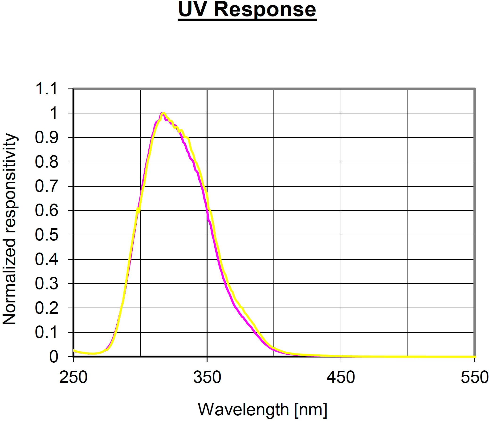

LTR390
The LTR390 optical sensor is a combined digital ambient light (ALS) and UVA sensor.
Ambient Light Specifications
Parameter |
Minimum |
Typical |
Maximum |
Units |
Condition |
|---|---|---|---|---|---|
ALS Output Resolution |
13 |
18 |
20 |
Bit |
Programmable for 13, 16, 17, 18, 19, 20 bit |
Dark Level Count |
0 |
5 |
count |
0 Lux, T_ope=25°C, 18-bit range |
|
Calibrated Lux Error In Gain Range 3 |
-10 |
10 |
% |
While LED, 5000K, T_ope=25°C |
|
ALS Accuracy |
-25 |
25 |
% |
Across different light sources |
UVS Specifications
Parameter |
Minimum |
Typical |
Maximum |
Unit |
Condition |
|---|---|---|---|---|---|
UVS Output Resolution |
13 |
18 |
20 |
Bit |
Programmable for 13, 16,17, 18, 19, 20 bit |
UV Count |
160 |
count |
UV LED 310nm, T_ope=25°C, 18-bit, Gain range = 18, Irradiance = 70uW/cm2 |
||
UV Sensitivity |
2300 |
Counts/UVI |
Gain range = 18, 20-bit |
||
UVI Accuracy (UVI>5) |
-20 |
20 |
% |
Gain Range = 18, 20bit |
|
UVI Accuracy (UVI<5) |
-1 |
1 |
% |
Gain Range = 18, 20bit |
ALS Sensor
The ambient light sensor is sensitive to a range of 450nm - 650nm and is centered at 535nm as seen in the graph below.
Additionally, below is a graph showing the angle of incidence of the sensor, where a normalized count of 1 indicates full sensitivity.
UVS Sensor
The UVS sensor peaks in sensitive for UVA wavelengths (315-400) with some moderate sensitivity to low-energy UVB wavelengths. The graph below indicates the the response of the UVS sensor, which has a range of 275nm - 400nm and is centered at 320nm.
The Ultra-Violet Spectrum
The ultra-violet spectrum ranges from 10nm to 400nm. This is further subdivided into different bands of intensity, which are used in remote sensing and to indicate their danger.

UVA
UVA is the longest wavelength of the UV spectrum, ranging from 400nm to 315nm. UVA is the primary cause of sunburns encountered from being in the sun too long. This is because the longer wavelength allows it to penetrate deeper into the skin.
UVB
UVB is a the middle band of the UV spectrum and ranges from 315nm to 280nm. UVB is mostly absorbed by the ozone layer, but can still reach the earth’s surface. This is primarily seen at higher latitudes and elevations. Because UVB has a shorter wavelength, this is the primary cause of skin cancer and blistering from sunburns.
UVC
UVB is the highest energy band in the UV spectrum, ranging from 280nm to 100nm. UVC is entirely filtered out by the Earth’s atmosphere, so is no danger to life on the surface, but can become a risk during air travel or in space. UVC is a type of ionizing radiation, meaning it easily kills cells. This is useful for UV disinfection lights.